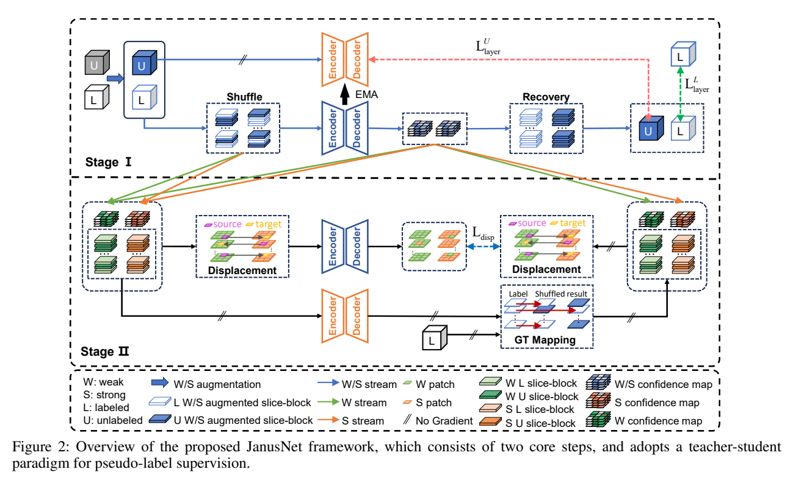
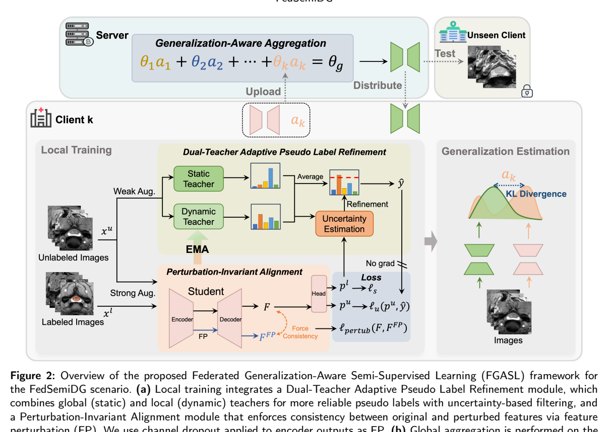

本篇未找到可可靠提取的方法流程图，请查看原文 PDF。
论文针对半监督医学图像分割。作者指出，Mean-Teacher（MT）类方法依赖学生模型，教师只是学生历史参数的指数滑动平均，容易继承并放大模型内部的“认知偏差”，在标注极少时导致预测不均衡或不准确[p. 1]。双流/协同训练方法（如CPS、MCF、Co-BioNet）虽用两个子网互相监督，但作者认为它们忽视了子网间与子网内特征交互，且从扰动输入生成高置信伪标签仍很困难[p. 2]。因此本文要解决两点：促进两个子网之间有效的互特征学习；提高无标注数据伪标签的可靠性[p. 2]。
训练集由少量有标注数据 $D_L={(X_i^l,Y_i^l)}$ 和大量无标注数据 $D_U={X_i^u}$ 组成，$N_l\ll N_u$[p. 3]。每个训练步的输入 $X$ 同时送入两个结构不同的子网 $F_A(\cdot)$（U-Net）和 $F_B(\cdot)$（V-Net），得到预测 $\hat Y_a,\hat Y_b$ 与特征 $F_a,F_b\in\mathbb{R}^{D\times H\times W}$（式1）[p. 3–4]。整体框架见图2[p. 3]：CCP 模块作用于特征层，UPG 模块融合两子网预测及不确定性图，生成无标注伪标签和有标注精炼图。
子网内特征增强（IFE）：为每个子网维护类别特征库 $Q_A,Q_B\in\mathbb{R}^{C\times K_f\times D}$，$K_f$ 为最大长度[p. 4]。预测经双线性插值缩放到特征尺寸，与特征逐元素相乘后全局池化得到样本原型；对比损失（式2）拉近当前样本原型与同类特征库均值 $k^{c_i+}$，推远其他类原型 $k^{c_j-}$，温度 $\tau$ 控制锐度[p. 4]。式3说明原型由 $G(F\odot B(\hat Y^c))$ 得到，$B$ 为双线性下采样、$G$ 为自适应全局池化[p. 4]。
子网间一致性（IC）：把同一图像同一位置、来自两个子网的特征块视为正对，不同位置为负对；2D 用 $3\times3$ 池化划分 patch，3D 额外沿深度池化[p. 4–5]。一致性损失为式4的对比损失，$N_p$ 为 patch 数，$P(\cdot)$ 为池化，$\tau$ 为温度；该对比学习施加在编码器最后三层特征上[p. 5]。
特征库更新：每轮迭代后，若当前有标注数据的 Dice 超过随迭代线性增长的阈值，才把有标注与无标注样本特征按真值/伪标签池化后写入对应类别；库满时用最新样本替换最早样本[p. 4–5]，流程见图3[p. 4]。
UPG 结构见图4[p. 5]。作者不用 Monte-Carlo 采样，而用 Dirichlet 分布与主观逻辑估计不确定性：证据 $e^m=\ln(1+\exp(\hat Y))$（式7），信念质量 $b_i^m=e_i^m/S^m$，总体不确定性 $u^m=C/S^m$，$S^m=\sum_i(e_i^m+1)$（式5–6）[p. 5]。得到两子网不确定性图 $u^a,u^b$ 后，用交叉注意力（式8）让 $u^a$ 的每个 patch 全局建模 $u^b$，$W_q,W_k$ 为可学习矩阵，$pe$ 为位置编码，$d$ 为头维度；输出相关图 $A_u$ 再经 MLP 残差得到[p. 5–6]。最终伪标签为 $\hat Y_p=\psi(\mathrm{Concat}(A_u\odot\hat Y_a,A_u\odot\hat Y_b))$（式9），$\psi$ 为轻量 Conv-BN-ReLU 网络[p. 6]。
监督损失采用交叉熵（式10）与 Dice（式11），并加入 Calibrated Uncertainty 损失 $L_{CU}$（式12），其中 $\beta_t=\beta_0e^{-(\ln\beta_0/T)t}$，$\beta_0=0.01$[p. 6]。子网A的监督项 $L_s^A=L_{ce}+L_{dice}+L_{CU}$（式13），无监督项 $L_u^A=L_{ce}(\hat Y_a^u,\hat Y_p)+L_{dice}(\hat Y_a^u,\hat Y_p)$（式14）[p. 6]。解码器末端还有双向一致性 $L_c^A=L_{ce}(\hat Y_a,\hat Y_b)$、$L_c^B=L_{ce}(\hat Y_b,\hat Y_a)$（式15）[p. 6]。总损失 $L_{total}=(L_A+L_B)/2+L_P+\lambda_fL_f$（式18），其中 $\lambda_q=0.2$、$\lambda_c=0.5$、$\lambda_f=0.1$，无监督权重用高斯 warm-up $\lambda_u(t)=\beta e^{-5(1-t/t_{max})^2}$，$\beta=15$[p. 6]。UPG 只在有标注数据上以 $L_P=L_{dice}+L_{ce}+L_{CU}$ 训练（式17），且其梯度不回传子网[p. 6]。
作者声称的贡献有三点[p. 2]：提出 UC-Seg 框架；提出 CCP（含 IFE 与 IC）以增强特征表示并缓解偏差；提出融合两子网分割图与不确定性图的 UPG 生成高置信伪标签；并在多种2D/3D模态上验证优于SOTA。我的解读：核心新颖点是把证据不确定性图作为交叉注意力的引导信号来融合双网预测，并用对比学习同时约束子网内类间分离与子网间同位置一致；但“双网+一致性+不确定性伪标签”的组合与 MCF、Co-BioNet 等思路接近，差异主要在融合机制与特征库设计。
数据集包括：结肠镜 ETIS、CVC-ClinicDB、CVC-ColonDB、CVC-300、Kvasir，训练集由 CVC-ClinicDB 与 Kvasir 共1450张组成，其余及三套外部集测试[p. 6]；ISIC 2018 训练2594/测试1000[p. 6]；甲状腺超声 TN3K（2879训练/614测试）与 TG3K（3585张）组成6464张训练验证，DDTI 637张测试[p. 6]；脑肿瘤 MRI 1373张，训练/验证/测试为1036/54/283[p. 6–7]；ACDC 100例按70/10/20划分[p. 7]；LA 100例按80/20划分[p. 7]；NIH 胰腺CT 82例按62/20划分[p. 7]。结肠镜、ISIC、甲状腺、脑MRI随机取10%与30%标注；ACDC、LA、胰腺沿用先前工作划分[p. 8]。
实现：PyTorch 1.8.1、CUDA 11.2、NVIDIA 3090；子网为 U-Net 与 V-Net；batch size 24（12有标注+12无标注）；SGD，学习率0.01，动量0.9，权重衰减1e-4，训练50000次迭代；特征库最大1440 tokens；特征库更新阈值对2D为 $0.4+0.56(t/t_{max})$，3D为 $0.2+0.56(t/t_{max})$；采用 copy-paste 增强[p. 8–9]。2D指标为 Dice、IoU、95HD、E-Measure，3D用 ASD 替代 E-Measure[p. 9]。
结肠镜/ISIC（表I，p. 7）：30%标注下 CVC-ClinicDB 上本文 Dice 87.10、IoU 81.09、95HD 3.36，BCP 为84.21/76.64/3.67，CAML 为80.91/74.93/3.67；10%标注下本文 Dice 80.63，BCP 78.33，UPCoL 75.46[p. 7, p. 9]。外部泛化：10%标注 ETIS 上本文 Dice 51.70，BCP 46.10；30%时本文57.09，BCP 55.28[p. 7, p. 9]。ISIC 10%/30%下本文 Dice 86.37/87.40，95HD 4.62/4.52[p. 7]。
其他2D（表II，p. 8）：脑MRI 10%/30% Dice 58.12/62.00；TN3K 80.64/82.17；ACDC 88.86/90.47。作者称在脑MRI与ACDC上多数指标最优[p. 10]。
3D（表III，p. 9）：LA 5%/10%标注 Dice 90.36/90.90，95HD 6.35/6.50，ASD 1.76/1.62；BCP 为88.02/89.62、7.90/6.81、2.15/1.76。胰腺CT 10%/20% Dice 81.71/83.84，95HD 4.99/3.79，ASD 1.44/1.07；BCP 为79.19/82.91、9.31/6.43、1.53/2.25[p. 9–10]。作者还称仅用10%标注即可接近全监督 U-Net/V-Net（图8，p. 11），但正文未给出具体数值。
表IV（p. 12）在10%标注下逐项加入模块：基线（仅两子网互监督）在 LA 上 Dice 75.23、95HD 19.08；加 UPG 后87.57/10.02；加 IFE 后86.75/12.50；加 IC 后84.72/13.17；三者全加为90.36/6.35。Kvasir 上基线80.57→全模块86.81；脑MRI 63.03→74.33；胰腺63.10→81.71。作者据此称 UPG 贡献最显著，IC/IFE 进一步提升[p. 11]。
融合策略（表V，p. 12）：交叉注意力在 LA 上 Dice 90.36、95HD 6.35，优于 Avg. 的85.29/12.55 与 Concat. 的84.08/11.96；胰腺上交叉注意力81.71/4.99，Avg. 65.01/17.87。样本原型 vs 像素原型（表VI，p. 12）：LA 90.36 vs 89.53，胰腺81.71 vs 75.82；正文另称 ETIS 上 Dice 由54.24%升至57.09%[p. 12]。一致性策略（表VII，p. 12）：LA 上对比学习90.36/6.35，MSE 89.66/7.92。
支持的结论：在作者设定的数据划分与10%/30%（或5%/10%）标注预算下，UC-Seg 在多数表格指标上优于所列基线，消融也显示 UPG 与交叉注意力融合带来明显增益。局限与缺失证据：表I–III 中部分单元格为空或“-”（如 DTC 在 ACDC 的 EM、CT 的 IoU），无法核对；表II 的列标题未在正文明确说明对应哪个数据集，只能依据上下文推断；图5–10 的定性结论仅来自图注与正文描述，未逐图核验；未报告参数量、推理时间、多次随机种子方差或显著性检验；UPG 的伪标签质量没有单独定量评估；特征库阈值与 warm-up 等超参的敏感性未做消融。
已报告：U-Net/V-Net 双骨干；SGD lr=0.01、momentum=0.9、weight decay=1e-4；batch 24（12+12）；50000迭代；$\lambda_q=0.2$、$\lambda_c=0.5$、$\lambda_f=0.1$、$\beta=15$、$\beta_0=0.01$；特征库1440 tokens；2D/3D 阈值公式；copy-paste 增强；2D/3D 指标[p. 6, p. 8–9]。未报告：具体数据增强参数、图像预处理与归一化、学习率调度、随机种子、每数据集训练轮数与早停、UPG 中 $\psi$ 的层数/通道、交叉注意力头数与 $d$、特征库写入的具体频率细节、代码（作者称将公开）[p. 1, p. 6]。复现时应先按上述设置搭建双网与特征库，再实现证据不确定性图与交叉注意力融合，最后按表IV顺序做消融核对。
本篇未找到可可靠提取的方法流程图，请查看原文 PDF。
论文关注稀疏标注下的医学图像分割，并区分三种设置：半监督学习（SSL，数据集级稀疏：少量全标注图像加大量未标注图像）、弱监督学习（WSL，样本级稀疏：全部训练图像只有 scribble 等稀疏标注）以及作者定义的 barely-supervised learning（BSL，同时包含稀疏标注样本和未标注样本）[p. 1][p. 3]。
现有主流是强-弱伪监督（如 FixMatch）：对弱增强未标注图像生成伪标签，再对强增强版本施加一致性约束，并用置信度阈值筛选伪标签 [p. 2]。作者指出关键问题是：无论怎样提升伪标签质量，伪标签与对应未标注图像之间仍存在不一致，这种不一致会在训练中累积并损害性能 [p. 2]。作者据此提出反向思路：不追求更好的伪标签，而是合成与伪标签匹配的图像，使训练使用高度一致的“合成图像-伪标签”对 [p. 2]。
SynMatch 包含两个组件：图像合成与损失监督 [p. 3]。每个迭代中：对未标注图像 x_u^j 做弱增强 γ(·)，用分割模型 f(·;θ) 得到伪标签 ȳ_u^j（不传梯度）；对未标注/有标注图像做强增强 Γ(·) 得到预测；同时从 x_u^j 的分割过程提取纹理特征 t̂_u^j 与形状特征 ŝ_u^j，合成图像 x̂_s^j；再对合成图像前向得到预测 ŷ_s^j；最后用 L = L_s + L_u 反向传播更新 θ [p. 3][p. 4, Algorithm 1]。
作者利用 CNN 的层次特征性质：浅层捕获局部边缘、角点、颜色等纹理，深层编码解剖结构等形状信息 [p. 3]。特征提取写作 t̂_u^j, ŝ_u^j ← f(x_u^j, θ)（式 1）[p. 3]。合成图像由随机权重 α ~ U(0,1) 加权融合：x̂_s^j = α × t̂_u^j + (1−α) × ŝ_u^j（式 2）[p. 3]。实现上，纹理特征取 U-Net 第一个卷积块之后的特征图，形状特征取最终卷积块之前（分割头之前）的特征图；对三通道结肠镜和皮肤镜图像，先合成亮度通道，再与原图色度通道合并 [p. 5]。该合成过程不引入任何额外训练参数 [p. 2][p. 3]。
有监督损失：L_s = L_seg(f(Γ(x_l^i), θ), y_l^{(w)i})（式 3），全标注时用 y_l，稀疏标注时用 y_l^w；L_seg 为交叉熵与 Dice 损失的联合 [p. 4]。
无监督损失包含两项：
L_u = I{p̄_u^j ≥ τ}(p̄_u^j) L(f(Γ(x_u^j), θ), ȳ_u^j) + I{p̄_u^j ≥ τ}(p̄_u^j) L(f(x̂_s^j, θ), ȳ_u^j)（式 4）[p. 4]。
其中第一项 L_org 作用于原始未标注图像，第二项 L_syn 作用于合成图像；τ 为像素级置信度阈值，I(·) 为指示函数；γ(·) 为几何弱增强（裁剪、旋转、翻转），Γ(·) 为在 γ 基础上加入颜色抖动、高斯模糊及 Mixup 的强增强 [p. 4]。作者强调，由于合成图像与原始图像存在视觉差异，两项无监督损失同时使用可防止模型过拟合合成数据；同时仍保留置信度阈值，以确保分割目标与真实解剖结构一致 [p. 4]。
作者声称的贡献包括：识别强-弱伪监督中未标注图像与伪标签的不一致，并验证语义一致性与分割性能的正相关；提出 SynMatch 这一通用框架，核心是生成高一致性的合成图像-伪标签对，作为强-弱伪监督的补充，且可灵活集成先进伪监督技术；建立覆盖 SSL、WSL、BSL 的多数据集基准 [p. 2]。
我的解读：方法的新颖点主要在于“用分割模型自身特征合成图像”这一参数无关设计，而非新的生成模型或新的伪标签选择策略；其有效性高度依赖“合成图像与伪标签同源”这一论证，实验上主要通过消融和一致性分析间接支持。
硬件为 NVIDIA A40 48GB；Python 3.8、PyTorch 1.11.0、CUDA 11.3；AdamW 优化器，固定学习率 1e-4，所有实验训练 200 epochs；骨干为 U-Net；置信度阈值 τ=0.95（沿用 FixMatch）；图像缩放至 256×256 训练和测试，预测恢复原尺寸；ACDC 做 2D 切片分割而非 3D 体分割；评价指标为 DSC 和 ASD [p. 5]。
心脏分割（Table 1）：SSL 5%/10% 下 SynMatch DSC 为 88.96%/90.18%，ASD 0.46/0.40；WSL 100% scribble 下 DSC 87.93%、ASD 0.55；BSL 5%/10% scribble 下 DSC 84.15%/86.67%，ASD 0.58/0.50 [p. 5]。作者称 SSL 增益相对温和，BSL 增益更显著；相对第二好方法在 BSL 5% 下 DSC 相对提升 3.45%；5% 标注下从 SSL 到 BSL 的 DSC 绝对下降仅 4.24%，而 GapMatch 下降 30.19% [p. 6]。
皮肤病变分割（Table 2）：SSL 下各方法接近全监督；BSL 5%/10% scribble 下 SynMatch DSC 77.34%/78.42%，ASD 2.31/2.08 [p. 5][p. 6]。
息肉分割（Table 3）：SSL 5%/10% 下 DSC 69.38%/72.92%；WSL 100% scribble 下 DSC 73.89%、ASD 6.64；BSL 5%/10% scribble 下 DSC 65.14%/69.36%，ASD 9.32/8.43；全监督 DSC 78.53% [p. 5][p. 6]。作者称 BSL 5% 下相对第二好方法有 3.45% 相对提升，并强调显著优于 GapMatch 等强-弱伪监督方法 [p. 6]。
Table 4 在 ACDC 上逐步加入 L_org 与 L_syn：仅强-弱监督时 SSL 5%/10% DSC 为 83.23%/86.26%，BSL 5%/10% 为 54.18%/74.95%；仅合成监督时 BSL 5%/10% 为 79.88%/82.57%；两者结合达到 84.15%/86.67%（BSL）和 88.96%/90.18%（SSL）[p. 7]。作者据此认为合成监督单独使用会过拟合合成数据，两者互补 [p. 7]。
特征融合分析（Figure 5）：在 ACDC BSL 5%/10% 下比较仅纹理、仅形状和加权组合，加权组合最佳；仅纹理易出现形状不一致，仅形状虽与伪标签高度一致但可能引入损害真实图像泛化的捷径 [p. 7]。语义一致性分析（Figure 6）：SynMatch 在“ŷ_s vs. ȳ_u”和“ȳ_u vs. y_u”上均高于 FixMatch，作者将其解释为高一致性训练提升伪标签质量 [p. 7]。定性结果（Figure 4、Figure 7）显示合成图像与伪标签对齐较好，伪标签质量随训练提升 [p. 6][p. 7]。
支持的结论：在三个数据集、三种设置下，SynMatch 多数指标优于所列基线，尤其 BSL 设置提升明显；消融支持 L_syn 与 L_org 互补；特征融合消融支持纹理+形状组合优于单一特征。
局限与缺失证据：论文未报告合成图像质量指标（如 FID）或合成图像与真实图像分布差异的定量度量；语义一致性分析主要基于作者定义的指标和图示，具体计算细节在正文中不完整；Table 1–4 的部分数值在 PDF 文本中排版交错，个别单元格难以可靠对应，本文仅引用可辨认的数字；未报告多次随机种子运行的方差或统计检验细节（仅称 p<0.05 的配对 t 检验）；未报告推理开销或合成分支的额外计算成本；BSL 的定义在文献中尚无共识，作者自行定义，跨论文可比性有限 [p. 3][p. 5][p. 7]。
已报告：U-Net 骨干；AdamW，学习率 1e-4；200 epochs；τ=0.95；256×256 输入；纹理特征取第一个卷积块后，形状特征取最终卷积块前；三通道图像先合成亮度通道再合并色度；ACDC 2D 切片；数据划分如 4.1；评价指标 DSC/ASD [p. 4][p. 5]。
未报告或需自行确定：batch size、学习率调度、强/弱增强的具体参数与概率、Mixup 的 α 设置、损失权重（L_s 与 L_u 如何加权）、合成特征的空间对齐/上采样方式、α 的采样是否逐样本、验证集模型选择准则、随机种子数量、代码尚未发布（作者称将发布）[p. 5]。复现时应优先确认这些细节，并对表格中交错数值以原文 PDF 排版为准核对。
本篇未找到可可靠提取的方法流程图，请查看原文 PDF。
论文关注半监督医学图像分割中一个被相对忽视的场景：CT 上数量多、体积小的肿瘤分割，而非左心房、肝脏等大器官分割 [p. 2]。作者指出既有 SSL 方法存在几类不足：(1) UA-MT、BCP 及其变体主要面向大器官，对小体积肿瘤效果有限；(2) MCF、URPC、MC-Net+ 等通过增加网络组件与混合损失提升性能，计算复杂度上升，却未充分利用简单的数据增强来提升标注/未标注数据间的一致性；(3) 部分方法分别训练标注与未标注数据，难以保证跨域一致性；(4) 伪标签精炼策略可能因肿瘤形态变化及师生模型固有差异引入错误预测；(5) Mixup/CutMix 随机混合大区域，忽略肿瘤边界不确定性，而 BCP 类方法或引入扩散模型的高计算成本，或不能依据预测置信度动态调整增强强度 [p. 2]。因此作者希望设计一个不增加额外参数/模块、能自适应增强并稳健生成伪标签的简单框架 [p. 2–3]。
整体流程见 Fig. 2 [p. 5] 与 Algorithm 1 [p. 7]，由 TUAA、IPT、BCP 三部分组成。
（1）师生预测与差异生成。 教师权重 θt 由学生权重 θs 经 EMA 更新。对未标注样本 ui，弱增强 Aw(·) 输入教师，掩码 Mi 与强增强 As(·) 组合后输入学生：psi = Fθs(MiAs(Aw(ui)))，pti = Fθt(Aw(ui))（式 1）[p. 5]。取 argmax 得伪标签 Psi、Pti，预测差异为 Pdif_i = ||Psi − Pti||（式 2）[p. 5]。弱增强含翻转、旋转、缩放、仿射（概率 0.3）；强增强含高斯噪声、偏置场、Gibbs 噪声、对比度调整、高斯平滑（概率 0.5），见表 1 [p. 6]。
（2）双向不确定性估计。 用两个方向的 KL 散度量化分歧：Ds→t = E[psi log(psi/pti)]，Dt→s = E[pti log(pti/psi)]（式 3）[p. 6]。
（3）自适应增强。 先做对称阈值过滤，τ=0.9：μ = E[(1−I(max(pti)≥τ))Dt→s + (1−I(max(psi)≥τ))Ds→t]（式 4）[p. 6]。再按 μ 混合弱增强与掩码强增强：ûi = (1−μ)Aw(ui) + μMiAs(Aw(ui))（式 5）；进一步引入预测差异：ûa_i = (1−Pdif)ûi + Pdif MiAs(Aw(ui))（式 6）[p. 6–7]。直观上，低不确定性时样本接近弱增强，高不确定性时更偏向强增强，从而在保持分布的同时突出困难区域。
（4）迭代伪标签过渡（IPT）。 伪标签目标为 Pmix_i = argmax( (e/(e+1))pti + (1/(e+1))psi )（式 7），e 为当前迭代/epoch，E 为总训练轮数 [p. 7]。随训练推进，学生预测权重从 1/2 逐渐衰减，教师预测权重逐渐增大，使伪标签由“师生平均”平滑过渡到“以教师为主”，以缓解噪声累积。
（5）双向 copy-paste 监督。 对等大小的标注批 Bx 与未标注批 Bu，按二值掩码 M 做双向混合：Xl→u = Mi xi + (1−Mi)ûa_i，Xu→l = Mj ûa_j + (1−Mj)xj（式 8）；对应标签 Yl→u = Mi yi + (1−Mi)Pmix_i，Yu→l = Mj Pmix_j + (1−Mj)yj（式 9），其中 j = i + |Bu|/2 [p. 8]。作者明确省略了 BCP 中常用的“最大连通域”步骤，理由是肿瘤可能因伪影或部分可见而呈多碎片，该操作会误删临床相关的小结构 [p. 8]。
（6）损失。 学生网络以监督方式训练，损失为 Dice + 交叉熵：Ll→u 与 Lu→l 分别作用于两个混合样本（式 10）[p. 8]。
作者声称的贡献有三点：首次系统关注小肿瘤半监督分割问题；提出 TUAA 与 IPT 两个新策略，且无需额外网络组件或额外训练损失；构建大规模自建 FSD 数据集并在公开 MSD 上验证泛化性 [p. 3]。我的解读是：方法的新意主要在于“把师生双向 KL 不确定性转化为增强混合系数”以及“让伪标签权重随训练迭代从学生向教师漂移”，二者都是轻量级改动；BCP 本身沿用 Bai 等 [10] 的框架，主要修改是去掉最大连通域过滤 [p. 8]。因此其贡献更偏向工程组合与针对小目标的适配，而非全新学习范式。
数据与预处理。 FSD 为山东省肿瘤医院 558 例食管癌胸部 CT（伦理批号 2022001007），HU 范围 −1024~3071，体素 0.5429×0.5429×3 至 1.2519×1.2519×5 mm³，分辨率 512×512×71 至 512×512×114；按 390 训练/168 测试划分，训练集中 30 例作验证 [p. 8]。MSD 使用 LiTS 的 200 例 CT，原划分 130 训练/70 测试但测试标签未公开；去除无肿瘤扫描后保留 116 例，随机分为 100 训练/8 验证/8 测试 [p. 8–9]。预处理：FSD 截断至 [−200,300] HU 并重采样到 0.8×0.8×5 mm³；MSD 截断至 [−100,200] HU 并重采样到 2×2×2 mm³；均做 min-max 归一化 [p. 9]。
训练设置。 PyTorch + MONAI，NVIDIA RTX 3090；batch size 2；patch 尺寸 FSD 160×160×80、MSD 112×112×64；Adam，多项式学习率策略，初始 2.5×10⁻⁴，power 0.9；总迭代 6000（FSD）/42000（MSD）；EMA 衰减 α=0.99；骨干为 3D U-Net；所有结果取 3 次运行平均 [p. 9]。对比设置：10%/20% 标注、90%/80% 未标注 [p. 9]。指标为 Dice、Jaccard、95% HD、RMSE、ASD [p. 9]。
对比方法。 MT、ICT、CCT、URPC、RD、CPS、MCF、MLRPL、BCP、MBCP、SDCL、DACNet、ACL，均从头训练 [p. 9]。
主要结果。 表 2 位于第 10 页，但该页在提供的文本中仅有页码“10”，表格内容不可辨认，因此无法逐项核对各基线数字；正文仅报告：10% 标注下 IPA-CP 相对第二名模型 Dice 提升 7.95%，且整体接近 100% 标注的全监督结果 [p. 9]。消融表 3 给出可读数字（10% 标注，FSD 36 例/MSD 10 例）[p. 12]：仅 WSA 时 FSD Dice 65.51%、HD 11.09 mm，MSD Dice 35.10%、HD 33.03 mm；加 BCP 后 FSD 70.61%、HD 7.63 mm，MSD 37.23%、HD 23.36 mm；WSA+BCP+TUE 时 FSD 68.88%、MSD 36.84%；WSA+BCP+IPT 时 FSD 71.34%、MSD 43.98%、HD 21.37 mm；WSA+BCP+TUE+IPT+PDI 全模型 FSD 71.72%、JA 57.66%、HD 7.29 mm，MSD 46.61%、JA 37.34%、HD 30.21 mm。注意表中最后一行与“全模型”行的对应关系在文本中未逐列标明，需以原表为准。
超参分析。 阈值 τ 在 {0.5,0.6,0.7,0.8,0.9} 上测试，τ=0.9 在 FSD 得 Dice 71.72%、HD 7.29 mm、ASD 2.05 mm，在 MSD 得 46.61%、HD 30.21 mm、ASD 17.61 mm；但 MSD 上 τ=0.6 的 HD 更低（16.17 mm）[p. 13]。掩码孔洞数/尺寸：MSD 上孔洞数或尺寸超过 30 时性能明显下降，FSD 较稳定；最终 FSD 孔洞数 5–40、尺寸 10–40，MSD 孔洞数 10–30、尺寸 10–20 [p. 13]。伪标签策略比较（表 5）[p. 13]：EMA 在 FSD/MSD 为 68.68%/44.72%，VOT 为 68.89%/23.53%，IPT 为 68.92%/46.73%，VOT+IPT 为 71.72%/46.61%；实践中前 1/5 迭代用 VOT、后 4/5 用 IPT [p. 14]。损失函数（Fig. 5）[p. 14]：CE 在 MSD/FSD 为 43.00%/71.14%，Dice 仅 12.76%/68.63%，CE+Dice 最佳为 46.61%/71.72%。
定性结果。 Fig. 3 [p. 11] 展示 FSD 与 MSD 各 3 例在 10% 标注下的 3D 分割，作者称 IPA-CP 在大肿瘤上减少假阳性、在小肿瘤上能识别其他方法漏检的病灶；Fig. 6 [p. 14] 展示极小肿瘤仍存在误判 [p. 15]。
支持的结论：在作者设定的 10%/20% 标注协议下，IPA-CP 在 FSD 与 MSD 上取得最高 Dice/JA（表 3 与正文），消融显示 TUE 对 MSD 提升最大（36.84→43.98 的对比需注意该行同时含 BCP 与 TUE，非严格单变量），PDI 与 IPT 也有贡献。作者将 MSD 上更大增益归因于肿瘤更小、BCP 的最大连通域策略不适用 [p. 12]，这一解释与“省略最大连通域”的设计动机一致，但缺少直接对照实验（例如保留最大连通域的 BCP 版本）来证明该操作是增益来源。
需要注意的局限与缺失证据：(1) 表 2 在提供文本中不可读，无法核验 7.95% 提升的具体基线及全部指标；(2) 消融表 3 的行与组件组合未在文本中逐行说明，存在歧义；(3) 仅报告 3 次运行均值，未报告方差或显著性检验；(4) MSD 测试集仅 8 例，统计功效有限；(5) 仅在 CT 上验证，MRI/超声未验证，作者亦承认 [p. 15]；(6) 极小或几乎不可见肿瘤仍失败 [p. 15]；(7) 未报告推理耗时、参数量或与 BCP 的计算开销对比。
已报告：3D U-Net 骨干；PyTorch+MONAI；RTX 3090；batch size 2；patch 160×160×80（FSD）/112×112×64（MSD）；Adam，初始学习率 2.5×10⁻⁴，多项式衰减 power 0.9；迭代 6000/42000；EMA α=0.99；τ=0.9；弱/强增强及概率见表 1；孔洞数/尺寸范围见 5.5.1；伪标签前 1/5 迭代 VOT、后 4/5 IPT；损失 CE+Dice；数据划分与预处理参数如上；代码链接 https://github.com/BioMedIA-repo/IPA-CP.git [p. 2]。
未报告或无法确认：优化器其余超参（weight decay 等）、学习率 warmup、随机种子、数据增强的具体实现库与插值方式、BCP 掩码生成的具体算法、3D U-Net 通道数、推理滑窗策略、表 2 全部数值、消融各行与组件的精确对应关系。复现时需以官方代码为准，并对上述未报告项做显式假设。
原论文流程图 · Figure 2 · PDF 第 3 页

Figure 2: Overview of the proposed JanusNet framework, which consists of two core steps, and adopts a teacher-student paradigmforpseudo-labelsupervision. 原文来源
论文针对半监督 3D 多器官分割：标注体素级标签成本高，而未标注体积充足，因此采用教师-学生伪标签与一致性正则。作者指出两类现有不足：其一，自训练伪标签在早期不可靠，直接使用会带来确认偏差；标注与未标注样本常被分开优化，目标与损失不对齐，形成经验分布不匹配，模型侧的温度缩放、置信度阈值或损失重加权只能缓解而不能消除该问题 [p. 1]。其二，从自然图像迁移来的 cube 级随机混合/复制粘贴在 3D 中会沿三个正交轴破坏解剖连续性，扰乱稳定的层位置与器官拓扑关系，对小器官（肾上腺、胆囊）和细长结构（食管、血管）尤其不利，导致召回下降、边界不稳、伪标签质量变差 [p. 1][p. 2]。作者主张数据增强应尊重 3D 语义连续性与相对层位置先验，并据此提出沿单一随机轴、按相同层索引对齐的 slice-block 级扰动 [p. 2]。
总体框架。 训练集 D = D_L ∪ D_U。学生网络 F(·; Θ_s)，教师 F_ema(·; Θ_t) 由学生参数的指数滑动平均更新。未标注体积 x̄ 的伪标签为 ỹ = argmax σ(F_ema(x̄; Θ_t))，σ 为 softmax [p. 3]。每次迭代采样 B 个标注和 B 个未标注体积，随机选一个正交轴 a ∈ {D,H,W}，并在该迭代的两个步骤中复用同一轴 [p. 3]。总损失为
L_total = L_layer^L + α L_layer^U + β L_disp，β = α × λ_disp，
其中 L_layer^L = ℓ_dice(P_rec^L, Y_L)，L_layer^U = ℓ_dice(P_rec^U, Ỹ_U)，分别对应恢复后的标注/未标注预测与真值/EMA 伪标签的 Dice 损失；L_disp 是位移输入上的学生预测与位移标签之间的体素级多类交叉熵与软 Dice 的均值 [p. 3][p. 4]。
Slice-Block Shuffle（SBS）。 将标注与未标注体积合并为 X_B（2B 个）。沿轴 a 的长度 L_a 按厚度 p 均分为 N 块（L_a = pN），得到每个体积的切片块序列。对每个层索引 j ∈ {1,…,N}，在 2B 个批索引上独立抽取一个列置换 R_{:,j}，即同一层索引的块在体积之间对齐交换；不同层索引的置换相互独立。这样只扰动所选轴，而垂直于该轴的平面内解剖上下文保持不变 [p. 4]。将置换后的体积送入学生网络得到混合特征/预测，再用逆置换 S = Inv(R) 把各层块映射回原批顺序，并拆回标注与未标注子集，得到 (P_rec^L, P_rec^U) [p. 4]。该步骤的损失即上述两个 Dice 层损失。
Confidence-Guided Displacement（CGD）。 在 SBS 产生的每个对齐层内，把平面切片划为 n×n 网格块，保留层索引 ℓ 与网格坐标 (u,v)。将弱、强两个流沿额外流维度堆叠，输入 V ∈ R^{B×2×1×D×H×W}，标签 Y、置信度图 C、监督指示 G（有真值处为 1）同形状 [p. 4]。对每个 (b, ℓ, u, v) 块计算流内平均置信度，并结合是否含标注体素，生成源/目标布尔掩码 M_src、M_tgt：源块为“低置信但含真值”或“高置信但无真值”；目标块为“高置信且真值”或“低置信且伪标签” [p. 4]。随后对每个样本和层计算两流置信度差，在 n×n 网格上保留差距最大的 K 个位置，得到选择掩码 M_K；只在两流互补且被 Top-K 选中的位置做一对一交换，图像块与标签块同步交换，其余位置不变 [p. 4]。最后沿轴 a 反 patch 化并折叠流维度，得到位移输入 X̂_disp 与位移标签 Ŷ_disp [p. 4]。位移标签由复合标签 Y* = G⊙Y + (1−G)⊙Ỹ 经同一 patch–统计–Top-K–位移流程生成，因此与 X̂_disp 严格对齐；学生预测 P_disp = σ(F(X̂_disp; Θ_s))，损失为 L_disp = ½ℓ_ce + ½ℓ_dice [p. 5]。
设计要点。 两个步骤共享同一随机轴与块厚度，先做全局层间对齐混合，再做层内局部困难区域交换，形成由粗到细的扰动；作者称该框架即插即用，对多数教师-学生方案只需少量代码改动 [p. 1][p. 2]。图 2（第 3 页）给出包含两个核心步骤并采用教师-学生伪标签监督的框架总览；本文仅依据其标题与正文描述，未从图像本身读取额外信息。
作者声称的贡献有三点：提出 slice-block shuffle，在随机轴上混合 N 个对齐层，使未标注数据继承相对位置语义，同时保留正交平面上的解剖连续性；提出置信度引导位移，用可靠区域替换不可靠区域以放大困难区域信号并改善一致性学习质量；方法即插即用，可与多种骨干和半监督范式结合，并在多个数据集上取得一致的最优结果 [p. 2]。我的解读是：核心新颖性在于把“沿单轴、按层索引对齐”的约束同时用于全局块置换和层内 patch 交换，并以教师置信度决定交换方向；这更像是对 MagicNet/BCP 类位置保持混合的轴向细化，而非全新的半监督目标函数。
数据集与设置。 使用 Synapse 和 AMOS；Synapse 采用 20% 标注，AMOS 采用 5% 标注 [p. 5][p. 6]。实现基于 PyTorch 2.6.0（CUDA 11.8），单张 NVIDIA RTX 4090 D；SGD，动量 0.9，权重衰减 1×10⁻⁴，多项式学习率调度，base lr=0.01、power=0.9；每批 4 个体积（2 标注、2 未标注），随机裁剪 96×96×96；弱/强 3D 增强参数一致采样；教师输入加小高斯扰动；一致性权重在前 17,000 次迭代经 sigmoid ramp-up 至 λ_u=1.0，EMA 衰减 0.99；p=2、Top-K=2、λ_disp=0.25；推理用 32×32×16 步长滑窗，报告 Dice(%) 与 Average Surface Distance（体素），Synapse 对三个随机种子取平均 [p. 5]。注意：正文写 p=2，但表 4 的消融结论称默认采用 p=16，二者存在不一致，论文未解释 [p. 5][p. 7]。
Synapse 20%。 表 1 中 JanusNet 平均 Dice 72.67±1.2、ASD 3.82±0.5；最强基线 GA-MagicNet 为 68.43±0.5、ASD 3.11±0.2，作者称提升 +4.24 Dice [p. 5]。逐器官上，JanusNet 对胃 75.0、胰腺 71.4、脾 87.9、肝 93.3、食管 55.0、胆囊 40.7；作者报告相对 GA-MagicNet 的胃 +12.3%、胰腺 +11.6%、脾 +5.4% [p. 5][p. 6]。但 ASD 并非最优：SKCDF 为 1.45±0.09、GenericSSL 为 2.52±0.4，均低于 JanusNet 的 3.82 [p. 5]。
AMOS 5%。 表 2 中 JanusNet 平均 Dice 63.99、ASD 4.45，均为最优；GA-MagicNet 为 63.51、ASD 4.58 [p. 6]。作者称相对 GA-MagicNet 的逐类增益为食管 +9.2%、胃 +7.4%、十二指肠 +6.3%、IVC +3.5%、胰腺 +2.5%，脾 +3.0%、肝 +0.5% [p. 6]。表中部分单元格（如 JanusNet 的 LAG 与 Du 附近）在提供的文本中无法可靠辨认，故不引用具体数值。
消融（Synapse 20%）。 表 3：仅弱/强增强基线 64.34±0.58；加 SBS 为 69.67±0.69（+5.33 来自增强，+2.84 来自 SBS）；加 CGD 为 71.82±1.54（+2.15）；三者合用 72.67±1.18，较基线 +8.33 [p. 7]。表 4：p=2/4/8/16/32 的 Dice 分别为 72.48/72.50/72.60/72.67/72.14，ASD 为 3.92/4.21/3.82/3.82/3.47；作者据此选 p=16，理由是精度与稳定性平衡 [p. 7]。表 5：λ_disp=0/0.25/0.5/0.75/1.0 的 Dice 为 72.51/72.67/72.50/72.16/71.40，ASD 为 3.96/3.82/3.98/4.28/4.39，支持 0.25 为折中 [p. 7]。表 6：Top-K=1/2/3/4/5 的 Dice 为 72.10/72.67/72.12/71.56/71.80，ASD 为 3.87/3.82/3.86/4.14/4.31，支持 K=2 [p. 7]。这些消融提供了各组件与超参数的局部证据，但未报告跨数据集或跨骨干的消融。
支持的结论：在作者设定的 Synapse 20% 与 AMOS 5% 条件下，JanusNet 的平均 Dice 优于所列基线，且消融表明 SBS 与 CGD 各自带来增益、组合最佳；对小/细长器官的逐类提升与动机一致 [p. 5][p. 6][p. 7]。需要注意：Synapse 上 ASD 明显劣于 SKCDF 与 GenericSSL，说明“最优”仅限平均 Dice；AMOS 仅一个标签预算，Synapse 仅 20%，未验证 5%/10% 等更低预算下的稳定性；表 1 中部分基线（如 UA-MT、URPC）在多个器官上为 0.0，可能反映训练失败或类别缺失，论文未讨论。作者未在正文报告参数量、训练时长、显存或统计显著性检验；也未给出与 BCP、MagicNet 在相同骨干下的受控对比细节。结论中“显著超越”主要依据平均 Dice，证据强度有限。
已报告：PyTorch 2.6.0/CUDA 11.8、单卡 RTX 4090 D、SGD（momentum 0.9，weight decay 1e-4）、多项式调度（base lr 0.01，power 0.9）、批大小 4（2 标注+2 未标注）、裁剪 96³、EMA 衰减 0.99、一致性 ramp-up 17,000 次迭代至 1.0、p=2（正文）或 p=16（消融结论）、Top-K=2、λ_disp=0.25、滑窗步长 32×32×16、Synapse 三种子平均 [p. 5][p. 7]。未报告：网络骨干的具体结构（正文只称教师-学生，未说明 3D U-Net/VNet 变体及通道数）、优化总迭代数、α 的具体取值、n×n 网格的 n 值、弱/强增强的具体算子与强度、高斯扰动方差、数据划分与预处理细节（论文称见补充材料，但补充材料未提供）、AMOS 的类别数与训练轮数。复现时应优先确认 p 的默认值矛盾，并补齐上述缺失项。
原论文流程图 · Figure 2 · PDF 第 6 页

Figure 2: Overview of the proposed Federated Generalization-Aware Semi-Supervised Learning (FGASL) framework for the FedSemiDG scenario. (a) Local training integrates a Dual-Teacher Adaptive Pseudo Label Refinement module, which combinesglobal(static)andlocal(dynamic)teachersformorereliablepseudolabelswithuncertainty-basedfiltering,and a Perturbation-Invariant Alignment module that enforces consistency between original and perturbed features via feature 原文来源
论文关注医疗图像分割中的两个现实约束叠加：一是多中心数据因隐私不能集中，需联邦学习；二是标注稀缺，需半监督学习。已有联邦半监督分割（FSSS）工作（如将 FixMatch 直接用于联邦、共享原型、MC dropout 去噪、依赖服务器公共数据等）均未显式处理域偏移，可能导致聚合次优、未标注数据利用效率低，最终在未见域上表现不佳 [p. 1][p. 2]。作者据此提出 FedSemiDG：K 个客户端各对应一个源域，各持有少量标注子集与大量未标注子集，目标是学得全局模型 f(x;θ)，使其在分布不同于所有源域的未见目标域 T 上泛化良好 [p. 5]。作者强调集中式 SemiDG 方法依赖集中访问多域数据，不能直接迁移到联邦场景 [p. 2]。
设第 k 个客户端本地经验风险为 L_{D̂k}(θ)，含监督项 ℓ_s 与无监督项 ℓ_u，由 λ 平衡；聚合权重 a=[a_1,…,a_K]，∑a_k=1。全局目标为加权期望风险 min_θ L_D(θ)=∑k a_k L{D̂k}(θ) [p. 6, Eq.1]。与 FedAvg 按样本数加权不同，本文让权重可学习。
理想泛化间隙定义为全局模型与本地最优模型在客户端数据上的风险差：Δ_{D̂k}(θ)=|L_{D̂k}(θ)−L_{D̂k}(θ*k)| [p. 6, Eq.2]。高层目标是同时最小化加权风险和间隙方差：min ∑a_k L{D̂k}(θ)+βVar({Δ_{D̂k}(θ)}) [p. 7, Eq.3]。由于半监督下标注少、理想间隙不可算，作者用全局模型与本地模型预测分布的平均 KL 散度作代理：G_{D̂k}(θ)=Ê_{x∼D̂k}[KL(p_θ(·|x)‖p_{θk}(·|x))] [p. 7, Eq.4]。引理 1 声称在损失 L-Lipschitz 条件下 Δ ≤ C_1·G^{1/2}，从而可用 KL 代理指导优化 [p. 7, Eq.5]。
实际权重更新规则为 Eq.6 [p. 7]：a'k=(G{D̂k}(θ_r)−μ)·d_r^{+}+a_k^{r−1}，再按 max_j G−μ 归一化并全局归一化；其中 μ 为各客户端代理均值，d_r=(1−r/R)·d，R 为总联邦轮数，d 为控制更新幅度的超参，初始权重 a^0_i=1/K。直观上，代理间隙越大（越欠代表）的客户端获得越高权重。作者称传输的只是一个标量间隙，隐私泄露风险低于交换梯度或数据统计 [p. 7]。
静态教师 θ_s 是本轮固定的全局模型，提供泛化知识；动态教师 θ_d 每轮由全局模型初始化，并按 EMA 更新 θ_d=π_1θ_d+(1−π_1)θ_k，π_1 为衰减率，提供本地知识 [p. 7]。对未标注样本 x 先做弱增强 α(·)，两教师预测取平均得融合分布 P_f=(P_{θs}+P_{θd})/2 [p. 8, Eq.7]，伪标签 ŷ=argmax_c P_f [p. 8, Eq.8]。
过滤机制：在标注样本上计算预测熵 H(x_l)，取 ramp-up 分位数 δ 作为阈值 T_lb，再用指数平滑更新全局阈值 T_un^{(t)}=π_2T_un^{(t−1)}+(1−π_2)T_lb^{(t)} [p. 8]。对强增强 A(x) 的预测，仅当双教师平均熵 u_{s+d}(x)≤T_un 时计入无监督损失 ℓ_u=1/B_u∑1(u≤T_un)L(ŷ_b,P_{θk}(y|A(x_b))) [p. 8, Eq.9]，其中 L 为交叉熵与 Dice 的加权组合（系数 η），u_{s+d} 为两教师熵的平均 [p. 8, Eq.10]。
对编码器输出 Enc(x) 施加特征扰动 𝒯（实现为通道级 dropout，概率 p），在瓶颈与所有跳跃连接处施加，要求解码器对原始与扰动特征输出一致：ℓ_perturb=1/B_l∑‖Dec(Enc(x_l))−Dec(𝒯(Enc(x_l)))‖²+1/B_u∑‖Dec(Enc(x_u))−Dec(𝒯(Enc(x_u)))‖² [p. 8, Eq.11]。总损失 l=ℓ_s+λ_1ℓ_u+λ_2ℓ_perturb [p. 9]。
定理 1 给出泛化误差上界，分解为泛化间隙项（含 √G 与权重 a_k）、域散度项 d_ℋΔℋ(D̂k,T)、估计误差项 C_2√(log(K/δ)/N_Lk) 与不可约风险 λ [p. 9, Eq.12]。作者论证 GAA 作用于权重 a_k，DR 通过冻结全局教师抑制本地漂移从而减小间隙，PIA 既减小间隙又隐式对齐域不变特征以缓解域散度 [p. 9]。
作者声称的贡献有四点：提出 FedSemiDG 新问题设定；实证表明直接套用 FSSL 或简单组合 FSSL+DG 不足；在四个数据集上重实现多种 SOTA 作为基准；提出 FGASL 框架（GAA+DR+PIA）[p. 3]。我的解读：核心新颖性在于把“按泛化间隙加权聚合”从全监督 FedDG 推广到半监督场景，并用 KL 代理使间隙可计算；DR 的双教师融合与 PIA 的通道 dropout 一致性本身是已有思想的组合，创新更多体现在面向 FedSemiDG 的系统整合与基准构建。
四个任务：Task 1 心脏 MRI（320 例，4 个厂商域，LV/MYO/RV，288×288）；Task 2 脊柱 MRI（4 中心，脊髓/灰质，256×256）；Task 3 膀胱癌 MRI（275 例 3D T2WI，4 中心，160×160）；Task 4 结直肠息肉（7 个公开数据集，352×352）[p. 9][p. 10]。每任务 4 个域，3 个可见域训练、1 个未见域测试，留一域协议，每域对应一个客户端 [p. 10]。标注切片数：Task 1/3 每域 50，Task 2/4 每域 30；其余切片为未标注（如 Task 1 各客户端未标注 1478/1837/984/613）[p. 10, Table 1]。指标：Task 1–3 用 DC、JC、HD95、ASD；Task 4 用 DC、JC；三次独立运行取平均 [p. 10]。
PyTorch，NVIDIA V100。Task 1–3 主干 U-Net，Task 4 主干 SSFormer-L，所有对比方法同主干 [p. 10]。Adam（动量 0.9/0.99），学习率 1×10⁻⁴（Task 1、2、4）与 1×10⁻⁵（Task 3）；标注与未标注 batch size 均为 8；联邦轮数 100，本地 epoch 1；λ_1=1.0，λ_2=0.3（Task 1、3）或 0.5（Task 2、4）；π_1=0.99，π_2=0.9；δ 从 0.15 升至 0.3（Task 1、3），从 0.1 升至 0.5（Task 2、4）；通道 dropout 概率 30%（Task 1、3）或 50%（Task 2、4）[p. 10][p. 11]。弱增强含翻转、旋转、平移、缩放；强增强含对比度、亮度、高斯模糊 [p. 11]。超参通过每源域留 5 张标注切片、三次随机验证划分的网格搜索确定 [p. 10]。
对比方法包括 RSCFed、DPL、FedCD，以及 FedCD+RC、FedCD+LDDG、FedAvg+AugSeq（±RC/LDDG），另有仅标注 FedAvg 下界、全标注 FedAvg 上界、本地训练基线 [p. 11]。作者报告：FSSL 方法相对 FL 下界仅 marginal 提升，DG 技术（RC、LDDG）仅略有改善甚至下降；FGASL 相对次优方法在平均 DC 上分别提升 4.07%（Task 1）、4.21%（Task 2）、2.93%（Task 3）、1.67%（Task 4），配对 t 检验 p 值分别为 6.4×10⁻³、5.3×10⁻⁴、3.0×10⁻³、6.3×10⁻³ [p. 12]。相对 Local+FixMatch，平均 DC 提升 31.92%、27.65%、8.70%、8.53% [p. 13]。
可辨认的具体数字：Task 1 中 FGASL 平均 DC 85.41%、JC 77.04%、HD95 4.99 mm、ASD 1.96 mm，FL 上界为 86.23%/77.85%/7.15/2.44 [p. 11, Table 2]。Task 2 中 FGASL 平均 DC 67.60%、JC 59.76%、HD95 26.65 mm、ASD 21.86 mm，FL 上界 80.50%/72.25%/13.09/9.92 [p. 11, Table 3]。Task 3 中 FGASL 平均 DC 59.10%、JC 49.18%、HD95 33.21 mm、ASD 12.13 mm，FL 上界 68.41%/56.04%/26.37/9.90 [p. 12, Table 4]。Task 4 中 FGASL 平均 DC 79.41%、JC 71.25%，FL 上界 84.11%/76.62% [p. 12, Table 5]。注意：表格在 PDF 文本中排版错乱，部分行与列对应关系无法可靠辨认，上述数字取自可清晰对应的行，其余对比数值不作转述。
组件消融（Task 1，以 FixMatch+FedAvg 为基线）：基线平均 DC 60.05%；单独加 GAA、DR、PIA 分别提升 2.37%、1.89%、1.52%；两两组合均优于单组件，GAA+DR 略优；三者全用达 67.60% [p. 14, Table 6]。该证据支持三组件互补，但仅在 Task 1 报告。
标注数量分析（Fig.5）：随每域标注数增加，三个任务 Dice 稳步上升；与下界差距显著，接近上界，Task 2 在标注较多时甚至超过上界 [p. 14][p. 15]。超参分析（Fig.6、Fig.7）：δ 起始 0.1、终止 0.3–0.4 较优；λ_2 与 dropout 率取 0.3（Task 1、3）或 0.5（Task 2）最佳，Task 2 在该设置下达 85.41% Dice [p. 15]。扰动策略消融（Fig.8）：通道 dropout 在三个任务、不同标注数下均优于均匀噪声与 VAT，低标注数时优势最明显 [p. 16]。效率（Fig.9）：每轮运行时间较 FedAvg 增加约 17%，主要来自双教师前向；FGASL 在 50 轮即超过最佳基线 100 轮的峰值 Dice [p. 16][p. 17]。
支持的结论：在四个任务、留一域协议下，FGASL 一致优于所比较的 FSSL 与 FSSL+DG 组合，且统计检验显著；消融支持三组件各自有效；效率开销可控。作者自述局限：相比 FedAvg 有约 17% 计算开销；隐私仅靠只传权重与标量间隙，未用差分隐私或安全聚合；未覆盖严重类别不平衡或全未标注客户端；未在 CT、超声等模态验证 [p. 17]。
缺失或需谨慎之处：消融仅在 Task 1 报告，其他任务无组件级证据；定理 1 与引理 1 的证明在补充材料中，正文未给出常数与假设细节；表格文本错乱导致部分基线数字无法核对；未报告与集中式 SemiDG 方法的直接比较；未报告通信量绝对值；隐私保护仅为定性论证，无攻击实验。
已报告：四任务数据来源与预处理尺寸、每域标注切片数（50/30/50/30）、留一域协议、U-Net 与 SSFormer-L 主干、Adam 参数与学习率、batch size 8、100 轮联邦、1 本地 epoch、λ_1=1.0、λ_2=0.3/0.5、π_1=0.99、π_2=0.9、δ 区间、dropout 率 30%/50%、强弱增强类型、验证集划分方式（每源域 5 张标注切片，三次随机划分网格搜索）[p. 10][p. 11]。未报告：d（GAA 更新幅度）与 β 的具体取值、η（Dice 权重）、优化器 weight decay、随机种子、各任务具体训练迭代数、通信量数值、代码（作者称接收后公开）[p. 1][p. 7][p. 8]。复现时需注意表格数字与行列对应关系在原文 PDF 中不可靠，应以作者代码或原始表格为准。